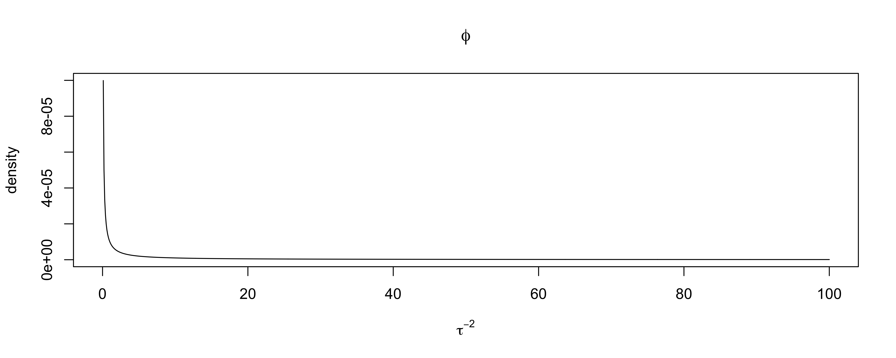

Lecture 23: Random Effects
STA702
Merlise Clyde
Duke University
Models with a Categorical Variable
Naive model (baseline) \[ y_{ij} \overset{iid}{\sim} N(\mu, \sigma^2) \]
\(j\) grouping or blocking variable - schools, counties, etc (categorical)
\(i\) observations within a block - students within schools, households within counties, etc
Fixed Effects model: \[ Y_{ij} \overset{ind}{\sim} N(\mu_j, \sigma^2) \]
Common reparameterization \[Y_{ij} \overset{ind}{\sim} N(\alpha + \beta_j, \sigma^2) \]
Identifiability
Issue with Fixed Effect Approach
What if \(n_j\), number of observations per block, are small?
Estimated uncertainty/variances are large based on MLE using group specific means
What if blocks might be viewed as a sample from some larger population? Sample of schools? Sample of plots in the forest? etc
May want inference about the larger population and say things about future blocks or groups (schools) !
fixed effects do not allow us to say anything about blocks or groups not in our sample!
how to address this?
Random Effects
\[\begin{align*} Y_{ij} & = \alpha + \beta_j + \epsilon_{ij}, \qquad \epsilon_{ij} \overset{iid}{\sim} N(0, \sigma^2) \\ \beta_j & \overset{iid}{\sim} N(0, \tau^2) \end{align*}\]
- random effects \(\beta_j\)
Note: Don’t confuse random effect distributions with prior distributions!
Random effect distributions should be viewed as part of the model specification
We’ve specified the likelihood in a hierarchical manner to induce desirable structure
unknown parameters are population parameters \(\alpha\), \(\tau\) and \(\sigma^2\) (fixed)
Bayesians put prior distributions on \(\alpha\), \(\tau\) and \(\sigma^2\); frequentists don’t!
Equivalent Model
\[Y_{j} = (y_{1j}, y_{2j}, \ldots, y_{n_j j})\] \[y_j \mid \alpha, \sigma^2, \tau^2 \mathrel{\mathop{\sim}\limits^{\rm ind}}N_{n_j}\left( \mathbf{1}_{n_j} \alpha, \left( \begin{array}{cccc} \sigma^2 + \tau^2 & \tau^2 & \ldots & \tau^2 \\ \tau^2 & \ddots & & \tau^2 \\ \vdots & & \ddots & \vdots \\ \tau^2 & \ldots & \tau^2 & \sigma^2 + \tau^2 \end{array}\right) \right)\]
Intraclass Correlation within-block correlation constant
algorithmically we can use either the latent variable model (keep \(\boldsymbol{\beta}\)) or the collapsed (marginal) model for inferences;
latent variable is easier to work with for Bayes or MCMC for MLE!
MLEs of \(\tau\) on boundary in some cases argues for Bayes! (Meta-Analysis)
Simple Gibbs Sampler
Reparameterize \(\theta = (\alpha, \phi_\tau = 1/\tau^2, \phi_\sigma = 1/\sigma^2, \beta_1, \ldots, \beta_J)\)
Priors (parameters Greek letters, hyperparameters Roman) \[\begin{align*} \alpha & \sim \textsf{N}(a_0, 1/P_0) \\ \phi_\tau & \sim \textsf{Gamma}(a_\tau/2, b_\tau/2) \\ \phi_\sigma & \sim \textsf{Gamma}(a_\sigma/2, b_\sigma/2) \end{align*}\]
Full Conditional for \(\alpha\) \[\begin{align*}\alpha \mid \tau^2, \sigma^2, \beta_1, \ldots \beta_n & \sim \textsf{N}(a_n, 1/P_n) \\ P_n = \left(P_0 + \sum_j n_{j} \phi_\sigma \right) & \quad a_n = \frac{a_0 P_0 + \sum_j n_j \bar{y}^*_j }{P_n} \\ \bar{y}^*_j & \equiv \frac{\sum_i (y_{ij} - \beta_j)}{n_j} \end{align*}\]
Full Conditionals Continued
\[\begin{align*} \phi_\sigma \mid \alpha, \phi_\tau, \beta_1, \ldots, \beta_J \sim \textsf{Gamma}\left(\frac{a_\sigma + \sum_j n_j}{2}, \frac{b_\sigma + \sum_{ij} (y_{ij} - \alpha - \beta_j)^2}{2} \right) \end{align*}\]
\[\begin{align*}\beta_j \mid \alpha, \tau, \sigma^2 & \mathrel{\mathop{\sim}\limits^{\rm ind}}\textsf{N}( \hat{b}_j, \hat{P}_{\beta_j}^{-1}) \\ \hat{P}_{\beta_j} &= \left(\phi_\tau + n_j \phi_\sigma \right) \\ \hat{b}_j & = \frac{\phi_{\tau} + n_j \phi_\sigma \bar{y}^{**}_j }{\hat{P}_{\beta_j}} \\ \bar{y}^{**}_j & \equiv \frac{\sum_i (y_{ij} - \alpha)}{n_j} \end{align*}\]
\[\begin{align*} \phi_\tau \mid \alpha, \sigma^2, \beta_1, \ldots, \beta_J \sim \textsf{Gamma}\left(\frac{a_\tau + J}{2}, \frac{b_\tau+ \sum_j \beta_j^2}{2} \right) \end{align*}\]
Complications Relative to Usual Regression
Prior Choice
Mixing and its dependence on parameterization
Early recommendation after Gibbs Sampler used non-informative priors \[\begin{align*} \pi(\alpha) & \propto 1 \\ \pi(\phi_\sigma) & \sim \textsf{Gamma}(\epsilon/2, \epsilon/2) \qquad \pi(\phi_\sigma ) \propto 1/\phi_\sigma \text{ as } \epsilon \to 0 \\ \pi(\phi_\tau) & \sim \textsf{Gamma}(\epsilon/2, \epsilon/2) \qquad \pi(\phi_\tau) \propto 1/\phi_\tau \text{ as } \epsilon \to 0 \end{align*}\]
Are full conditionals proper ?
Is joint posterior proper ?
MCMC and Improper Priors
proper full conditionals even with improper priors
but joint is improper !
MCMC won’t converge to the stationary distribution (doesn’t exist)
may not notice it!
Hill (1965) considered the one-way anova model and showed impropriety for \(p(\tau^2) \propto 1/\tau^2\)
Hobart & Casella (1996) provide conditions on improper priors leading to proper posteriors in more general random and mixed effects models
Diffuse But Proper
\[\begin{align*} \alpha & \sim N(0, 10^{-6})\\ \pi(\phi_\sigma) & \sim \textsf{Gamma}(10^{-6}, 10^{-6} )\\ \pi(\phi_\tau) & \sim \textsf{Gamma}(10^{-6}, 10^{-6} ) \end{align*}\]
- Nearly improper priors may lead to terrible performance! highly sensitive to just how vague the prior is! (Domains of attraction)
Alternative Priors
\[\begin{align*} y_{ij} \mid \alpha, \beta_1, \ldots \beta_J, \phi_\sigma^2 & \mathrel{\mathop{\sim}\limits^{\rm ind}}\textsf{N}(\alpha + \beta_j, 1/\phi_\sigma^2) \\ p(\alpha, \phi_\sigma) & \propto 1/\phi_\sigma \\ \beta_j \mid \tau & \overset{iid}{\sim} \textsf{N}(0, \tau^2) \end{align*}\]
Gelman 2006 in a discussion of Browne & Draper paper in Bayesian Analysis recommended priors on random effect standard deviation \(\tau\)
\(\pi(\tau ) \propto 1(\tau > 0)\) (improper prior on sd)
\(\pi(\tau ) \propto 1(\tau > 0)\textsf{N}(0,1)\) folded standard normal (half-normal)
\(\pi(\tau ) \propto 1(\tau > 0)\textsf{N}(0,1/\psi) \qquad \psi \sim \textsf{Gamma}(\nu/2, \nu/2)\) leads to a folded t or half t with \(\nu\) degrees of freedom marginally
half-Cauchy is a special case of half-t with \(\nu = 1\)
Proper Posterior ?
Integrate out \(\beta_j\) and work with
\[\pi(\mu, \tau, \sigma^2 \mid y) \propto \pi(\mu, \tau, \sigma^2) \prod_{j=1}^J \textsf{N}\left(y_{j}; \mathbf{1}_{n_j} \alpha, \left(
\begin{array}{cccc}
\sigma^2 + \tau^2 & \tau^2 & \ldots & \tau^2 \\
\tau^2 & \ddots & & \tau^2 \\
\vdots & & \ddots & \vdots \\
\tau^2 & \ldots & \tau^2 & \sigma^2 + \tau^2 \end{array}\right) \right)\]
- take \(\pi(\mu, \tau, \sigma^2) \propto \sigma^{-2} \, \textsf{C}^+(\tau; 0, 1)\)
OR
take \(\pi(\mu, \tau, \sigma^2) \propto \sigma^{-2}\) (note prior on standard deviation \(\tau\))
Show that joint posterior is proper
Propriety
expression for marginal likelihood requires determinant and inverse of intra-class correlation matrix!
Write covariance as \(\sigma^2 \mathbf{I}_{n_j} + \tau^2 n_j \mathbf{P}_{\mathbf{1}_{n_j}}\) and find spectral decomposition \[\begin{align} \sigma^2 \mathbf{I}_{n_j} + \tau^2 n_j \mathbf{P}_{\mathbf{1}_{n_j}} & = \mathbf{U}[\sigma^2 \mathbf{I}_{n_j} + \tau^2 n_j \text{diag}(1, 0 , \ldots, 0)] \mathbf{U}^T\\ (\sigma^2 \mathbf{I}_{n_j} + \tau^2 n_j \mathbf{P}_{\mathbf{1}_{n_j}} )^{-1} & = \frac{1}{\sigma^2} (\mathbf{I}_{n_j} + \frac{\tau^2 n_j}{\sigma^2 + \tau^2 n_j} \mathbf{P}_{\mathbf{1}_{n_j}}) \end{align}\]
integrate out \(\alpha\) (messy completing the square)! see Hill 1965 Equation 3.
consider conditional and joint distributions from \(1/\sigma^2\) and \(\tau\)
determine if integrals are finite (what happens at \(\tau\) near 0 ?)
special case when \(n_j\) are all equal is much simpler!
Bayes Estimates of Variances
Avoids issues when estimate of variance is on the boundary of the parameter space
Do not have to use asymptotics to construct CI!
full uncertainty propagation
predictive distributions for future data (avoid plug in estimates of variance components
Gelman (2006) recommends half-t if the number of groups is small or uniform but uniform on the standard deviation \(\tau\) does lead to an improper posterior if \(J \leq 3\) (typically need larger number of groups)
Hobart & Casella (1996) provides more rigorous conditions with improper priors